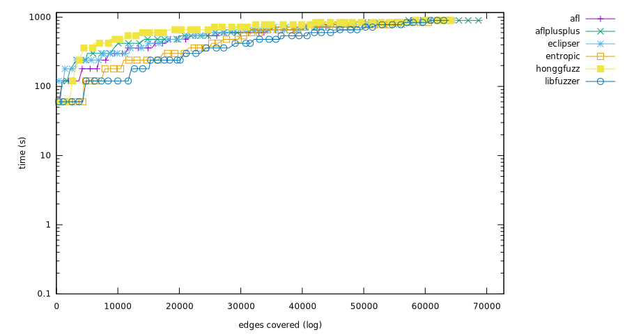
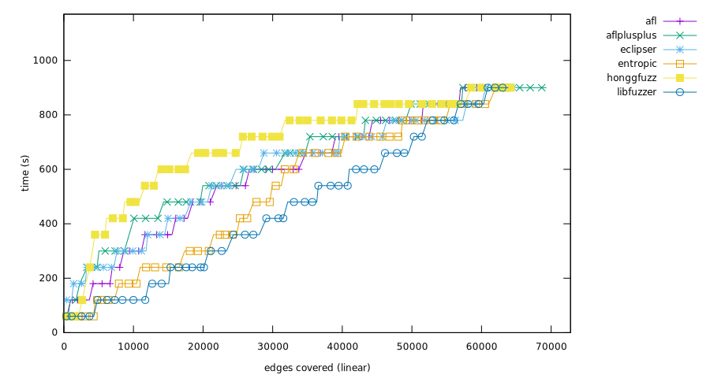
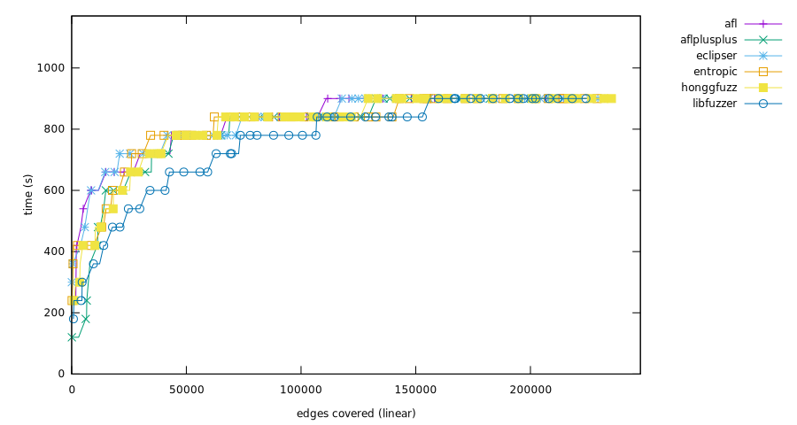

Experiment result
Critical difference
Micro-benchmark Critical difference
| Fuzzer | Rank |
|---|
| aflplusplus | 2.89 |
| honggfuzz | 3.14 |
| entropic | 3.41 |
| afl | 3.68 |
| eclipser | 3.75 |
| libfuzzer | 3.96 |
Overall (ranking by edges covered)
- honggfuzz (1,101,930 edges covered), success rate: 11.25%(225/2000 pairs)
- aflplusplus (1,087,601 edges covered), success rate: 12.70%(254/2000 pairs)
- afl (1,049,218 edges covered), success rate: 11.45%(229/2000 pairs)
- eclipser (1,048,245 edges covered), success rate: 11.35%(227/2000 pairs)
- entropic (1,031,594 edges covered), success rate: 11.05%(221/2000 pairs)
- libfuzzer (985,917 edges covered), success rate: 10.95%(219/2000 pairs)

bloaty_fuzz_target
Ranking
- afl, (33,201 edges covered), success rate: 0.00%(0/100 pairs)
- honggfuzz, (32,730 edges covered), success rate: 0.00%(0/100 pairs)
- eclipser, (29,592 edges covered), success rate: 0.00%(0/100 pairs)
- entropic, (28,684 edges covered), success rate: 0.00%(0/100 pairs)
- libfuzzer, (24,032 edges covered), success rate: 0.00%(0/100 pairs)
- aflplusplus, (20,132 edges covered), success rate: 0.00%(0/100 pairs)
Mann-Whitney U test
curl_curl_fuzzer_http
Ranking
- aflplusplus, (100,063 edges covered), success rate: 2.00%(2/100 pairs)
- honggfuzz, (89,280 edges covered), success rate: 0.00%(0/100 pairs)
- eclipser, (88,635 edges covered), success rate: 0.00%(0/100 pairs)
- afl, (87,209 edges covered), success rate: 0.00%(0/100 pairs)
- entropic, (83,807 edges covered), success rate: 1.00%(1/100 pairs)
- libfuzzer, (81,825 edges covered), success rate: 0.00%(0/100 pairs)
Mann-Whitney U test
freetype2-2017
Ranking
- honggfuzz, (80,583 edges covered), success rate: 0.00%(0/100 pairs)
- aflplusplus, (74,315 edges covered), success rate: 0.00%(0/100 pairs)
- eclipser, (64,242 edges covered), success rate: 0.00%(0/100 pairs)
- afl, (56,358 edges covered), success rate: 0.00%(0/100 pairs)
- entropic, (52,022 edges covered), success rate: 0.00%(0/100 pairs)
- libfuzzer, (48,211 edges covered), success rate: 0.00%(0/100 pairs)

Mann-Whitney U test
harfbuzz-1.3.2
Ranking
- aflplusplus, (77,436 edges covered), success rate: 0.00%(0/100 pairs)
- honggfuzz, (75,552 edges covered), success rate: 0.00%(0/100 pairs)
- afl, (70,573 edges covered), success rate: 0.00%(0/100 pairs)
- eclipser, (70,182 edges covered), success rate: 0.00%(0/100 pairs)
- entropic, (63,850 edges covered), success rate: 0.00%(0/100 pairs)
- libfuzzer, (61,580 edges covered), success rate: 0.00%(0/100 pairs)
Mann-Whitney U test
jsoncpp_jsoncpp_fuzzer
Ranking
- entropic, (12,079 edges covered), success rate: 100.00%(100/100 pairs)
- eclipser, (12,077 edges covered), success rate: 98.00%(98/100 pairs)
- honggfuzz, (12,074 edges covered), success rate: 98.00%(98/100 pairs)
- afl, (12,071 edges covered), success rate: 95.00%(95/100 pairs)
- libfuzzer, (12,057 edges covered), success rate: 96.00%(96/100 pairs)
- aflplusplus, (12,017 edges covered), success rate: 84.00%(84/100 pairs)
Mann-Whitney U test
lcms-2017-03-21
Ranking
- aflplusplus, (24,566 edges covered), success rate: 0.00%(0/100 pairs)
- honggfuzz, (22,886 edges covered), success rate: 0.00%(0/100 pairs)
- eclipser, (20,081 edges covered), success rate: 0.00%(0/100 pairs)
- afl, (19,381 edges covered), success rate: 0.00%(0/100 pairs)
- entropic, (18,311 edges covered), success rate: 0.00%(0/100 pairs)
- libfuzzer, (18,126 edges covered), success rate: 0.00%(0/100 pairs)
Mann-Whitney U test
libjpeg-turbo-07-2017
Ranking
- aflplusplus, (28,529 edges covered), success rate: 13.00%(13/100 pairs)
- afl, (25,496 edges covered), success rate: 8.00%(8/100 pairs)
- eclipser, (24,982 edges covered), success rate: 5.00%(5/100 pairs)
- entropic, (20,431 edges covered), success rate: 2.00%(2/100 pairs)
- honggfuzz, (19,906 edges covered), success rate: 1.00%(1/100 pairs)
- libfuzzer, (18,182 edges covered), success rate: 0.00%(0/100 pairs)
Mann-Whitney U test
libpcap_fuzz_both
Ranking
- aflplusplus, (47,557 edges covered), success rate: 7.00%(7/100 pairs)
- honggfuzz, (43,582 edges covered), success rate: 2.00%(2/100 pairs)
- entropic, (42,729 edges covered), success rate: 3.00%(3/100 pairs)
- eclipser, (40,586 edges covered), success rate: 1.00%(1/100 pairs)
- libfuzzer, (40,569 edges covered), success rate: 3.00%(3/100 pairs)
- afl, (40,519 edges covered), success rate: 1.00%(1/100 pairs)
Mann-Whitney U test
libpng-1.2.56
Ranking
- aflplusplus, (16,333 edges covered), success rate: 44.00%(44/100 pairs)
- entropic, (14,827 edges covered), success rate: 29.00%(29/100 pairs)
- honggfuzz, (14,527 edges covered), success rate: 37.00%(37/100 pairs)
- eclipser, (13,431 edges covered), success rate: 28.00%(28/100 pairs)
- libfuzzer, (13,339 edges covered), success rate: 12.00%(12/100 pairs)
- afl, (12,692 edges covered), success rate: 30.00%(30/100 pairs)
Mann-Whitney U test
libxml2-v2.9.2
Ranking
- honggfuzz, (110,208 edges covered), success rate: 8.00%(8/100 pairs)
- afl, (104,192 edges covered), success rate: 2.00%(2/100 pairs)
- eclipser, (103,404 edges covered), success rate: 2.00%(2/100 pairs)
- aflplusplus, (102,768 edges covered), success rate: 3.00%(3/100 pairs)
- entropic, (98,803 edges covered), success rate: 2.00%(2/100 pairs)
- libfuzzer, (93,463 edges covered), success rate: 1.00%(1/100 pairs)
Mann-Whitney U test
libxslt_xpath
Ranking
- aflplusplus, (69,319 edges covered), success rate: 1.00%(1/100 pairs)
- eclipser, (65,272 edges covered), success rate: 1.00%(1/100 pairs)
- honggfuzz, (64,901 edges covered), success rate: 0.00%(0/100 pairs)
- afl, (64,869 edges covered), success rate: 1.00%(1/100 pairs)
- entropic, (64,252 edges covered), success rate: 0.00%(0/100 pairs)
- libfuzzer, (63,862 edges covered), success rate: 0.00%(0/100 pairs)
 
Mann-Whitney U test
mbedtls_fuzz_dtlsclient
Ranking
- aflplusplus, (12,065 edges covered), success rate: 2.00%(2/100 pairs)
- honggfuzz, (10,148 edges covered), success rate: 0.00%(0/100 pairs)
- entropic, (9,107 edges covered), success rate: 0.00%(0/100 pairs)
- afl, (8,948 edges covered), success rate: 0.00%(0/100 pairs)
- eclipser, (8,775 edges covered), success rate: 1.00%(1/100 pairs)
- libfuzzer, (7,047 edges covered), success rate: 0.00%(0/100 pairs)
Mann-Whitney U test
openssl_x509
Ranking
- entropic, (27,756 edges covered), success rate: 0.00%(0/100 pairs)
- libfuzzer, (26,731 edges covered), success rate: 0.00%(0/100 pairs)
- afl, (26,112 edges covered), success rate: 0.00%(0/100 pairs)
- aflplusplus, (25,970 edges covered), success rate: 0.00%(0/100 pairs)
- eclipser, (24,053 edges covered), success rate: 0.00%(0/100 pairs)
- honggfuzz, (22,247 edges covered), success rate: 0.00%(0/100 pairs)

Mann-Whitney U test
openthread-2019-12-23
Ranking
- entropic, (22,565 edges covered), success rate: 10.00%(10/100 pairs)
- libfuzzer, (22,538 edges covered), success rate: 10.00%(10/100 pairs)
- aflplusplus, (22,184 edges covered), success rate: 6.00%(6/100 pairs)
- afl, (20,774 edges covered), success rate: 8.00%(8/100 pairs)
- eclipser, (20,650 edges covered), success rate: 8.00%(8/100 pairs)
- honggfuzz, (20,170 edges covered), success rate: 3.00%(3/100 pairs)
Mann-Whitney U test
php_php-fuzz-parser
Ranking
- honggfuzz, (140,719 edges covered), success rate: 0.00%(0/100 pairs)
- entropic, (139,284 edges covered), success rate: 0.00%(0/100 pairs)
- aflplusplus, (131,627 edges covered), success rate: 0.00%(0/100 pairs)
- afl, (131,315 edges covered), success rate: 0.00%(0/100 pairs)
- eclipser, (129,179 edges covered), success rate: 0.00%(0/100 pairs)
- libfuzzer, (129,049 edges covered), success rate: 0.00%(0/100 pairs)
Mann-Whitney U test
proj4-2017-08-14
Ranking
- entropic, (24,981 edges covered), success rate: 10.00%(10/100 pairs)
- honggfuzz, (24,891 edges covered), success rate: 8.00%(8/100 pairs)
- libfuzzer, (24,563 edges covered), success rate: 7.00%(7/100 pairs)
- aflplusplus, (22,931 edges covered), success rate: 1.00%(1/100 pairs)
- eclipser, (22,109 edges covered), success rate: 0.00%(0/100 pairs)
- afl, (22,049 edges covered), success rate: 0.00%(0/100 pairs)
Mann-Whitney U test
re2-2014-12-09
Ranking
- libfuzzer, (65,822 edges covered), success rate: 82.00%(82/100 pairs)
- afl, (65,816 edges covered), success rate: 70.00%(70/100 pairs)
- aflplusplus, (65,809 edges covered), success rate: 75.00%(75/100 pairs)
- eclipser, (65,789 edges covered), success rate: 73.00%(73/100 pairs)
- honggfuzz, (65,724 edges covered), success rate: 58.00%(58/100 pairs)
- entropic, (65,128 edges covered), success rate: 54.00%(54/100 pairs)
Mann-Whitney U test
sqlite3_ossfuzz
Ranking
- honggfuzz, (236,145 edges covered), success rate: 1.00%(1/100 pairs)
- afl, (235,534 edges covered), success rate: 0.00%(0/100 pairs)
- eclipser, (233,361 edges covered), success rate: 1.00%(1/100 pairs)
- entropic, (229,582 edges covered), success rate: 1.00%(1/100 pairs)
- libfuzzer, (224,593 edges covered), success rate: 1.00%(1/100 pairs)
- aflplusplus, (219,079 edges covered), success rate: 1.00%(1/100 pairs)

Mann-Whitney U test
systemd_fuzz-link-parser
Ranking
- honggfuzz, (3,545 edges covered), success rate: 0.00%(0/100 pairs)
- entropic, (3,215 edges covered), success rate: 4.00%(4/100 pairs)
- libfuzzer, (3,168 edges covered), success rate: 4.00%(4/100 pairs)
- eclipser, (3,100 edges covered), success rate: 4.00%(4/100 pairs)
- aflplusplus, (2,945 edges covered), success rate: 4.00%(4/100 pairs)
- afl, (2,712 edges covered), success rate: 7.00%(7/100 pairs)
Mann-Whitney U test
vorbis-2017-12-11
Ranking
- honggfuzz, (12,112 edges covered), success rate: 9.00%(9/100 pairs)
- aflplusplus, (11,956 edges covered), success rate: 11.00%(11/100 pairs)
- entropic, (10,181 edges covered), success rate: 5.00%(5/100 pairs)
- afl, (9,397 edges covered), success rate: 7.00%(7/100 pairs)
- eclipser, (8,745 edges covered), success rate: 5.00%(5/100 pairs)
- libfuzzer, (7,160 edges covered), success rate: 3.00%(3/100 pairs)

Mann-Whitney U test